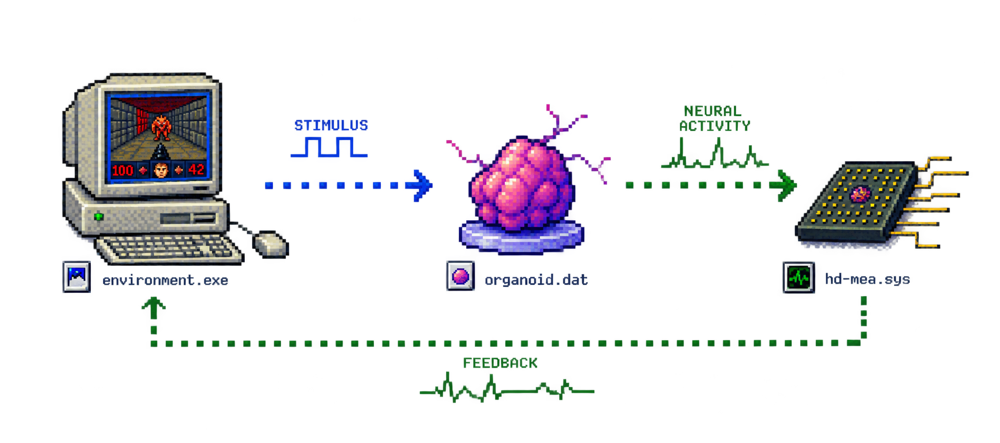

CAN A LAB-MADE
BRAIN COMPUTE?
What happens when living neural tissue becomes part of a closed-loop system?
Hi, I'm Any Rodrigues, a molecular bioengineer interested in the interface between living neural systems and technology.
My background is in neural electrophysiology and HD-MEA, working with neural co-cultures and ex vivo adult zebrafish retina.
I am particularly interested in moving from simply recording neural activity toward bidirectional systems that can stimulate, record and interact with living neural networks.
> thinking about: at what point does science fiction become experimental biology?
> status: looking for the lab where the next chapter begins...
> _
University of Porto
MEA electrophysiology
DZNE
HD-MEA electrophysiology
TU Dresden / CRTD
living neural systems + computation
homepage page views
Live counter requires configuration.
on a computer
HTML
29.10.2026